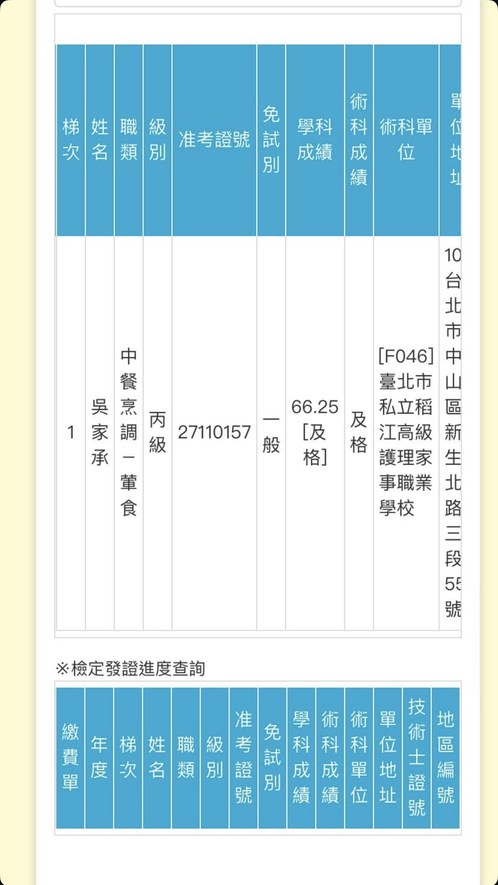
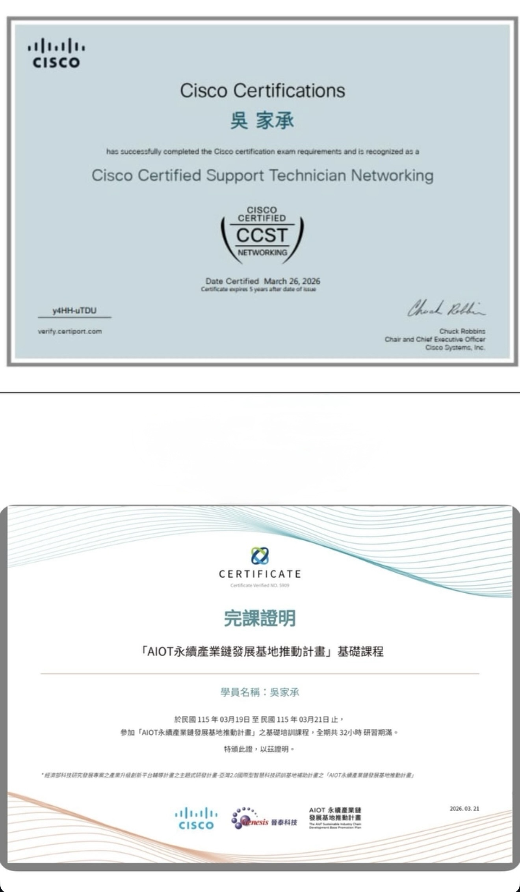
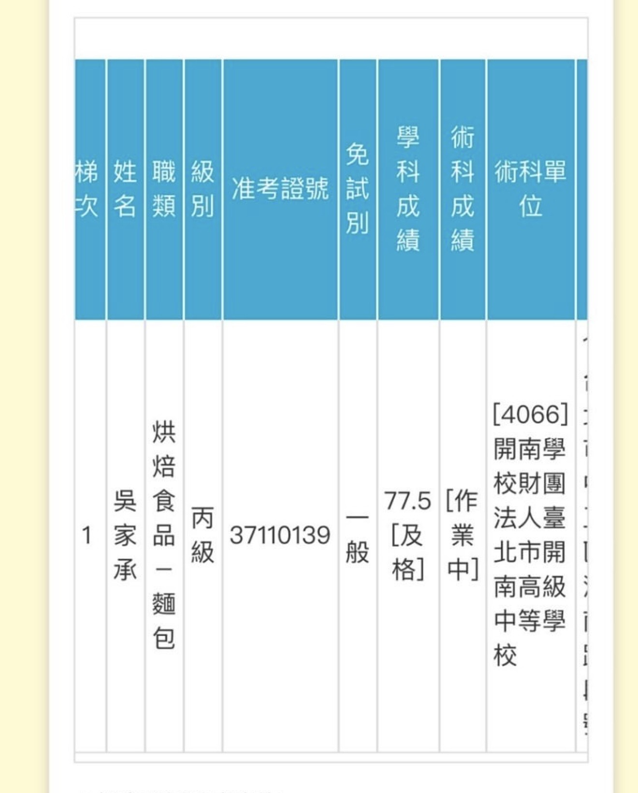

這裡是我的作品集頁面，您可以在這裡看到我的一些項目和成果。
通過國家級技術士檢定，具備標準中式料理烹調、專業刀工及食材處理能力。訓練過程中嚴格落實食品安全衛生與高效率的時間管理，展現跨領域學習的實作成果。

榮獲全球網路龍頭思科核發之 Cisco Certified Support Technician 專業認證。具備網路基礎架構設定、通訊協定、IP 路由運作及網路安全防禦之實務技術，具備維運與排除現代化資訊網絡設備的國際標準實力。

投入烘焙科學領域，掌握麵包製作的黃金配比、發酵製程控管與專業烤焙技術。在追求精準度與程序化操作的過程中，鍛鍊出對細節的高度敏銳感與嚴謹的專案執行力。
